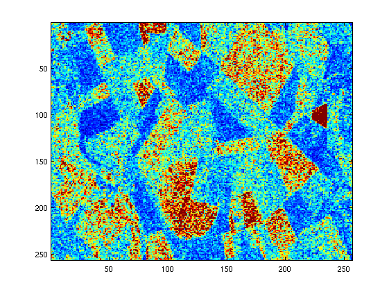
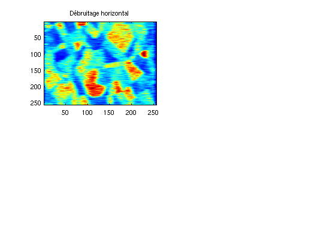
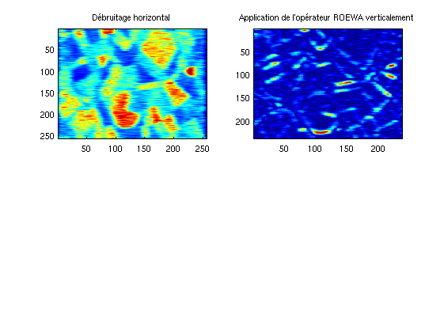
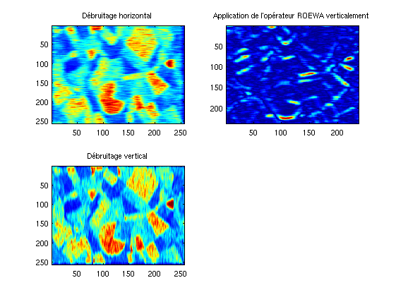
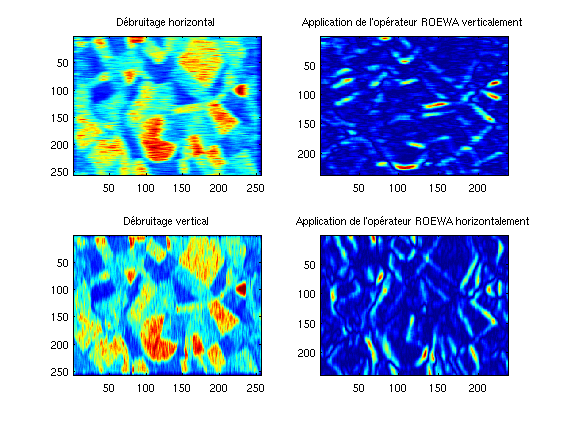
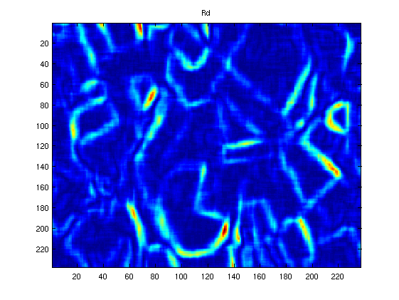

Contents
PARTIE
Comment
% Détection de ruptures sur une image TEST close all clear all clc
Paramètres
mu = 100 % Nombre moyen de pixel entre deux ruptures d'intensité lambda = 1/mu L = 10 % Paramètre du bruit bord = 10 % Largeur des bords ignoré (pour rétablir une échelle correcte) seuil = 1.7 % Seuil de segmentation order = 15 % Ordre du filtre
mu =
100
lambda =
0.0100
L =
10
bord =
10
seuil =
1.7000
order =
15
Chargement de l'image
load 'Bourges.mat'; % exporte la variable y image = y; imagesc(image);
Création du filtre ISEF
isef = isef(image, lambda, order, L);
title('Image SAR');

Direction 1
Débruitage
im1_debruite = debruite(image, isef);
figure;
subplot(2, 2, 1);
imagesc(im1_debruite);
title('Débruitage horizontal');
 Application de l'opérateur roewa
roewa1 = roewa(im1_debruite', isef)';
subplot(2, 2, 2);
imagesc(roewa1(bord:end-bord, bord:end-bord));
title('Application de l''opérateur ROEWA verticalement');
 Direction 2
Débruitage
im2_debruite = debruite(image', isef)';
subplot(2, 2, 3);
imagesc(im2_debruite);
title('Débruitage vertical');
 Application de l'opérateur roewa
roewa2 = roewa(im2_debruite, isef);
subplot(2, 2, 4);
imagesc(roewa2(bord:end-bord, bord:end-bord));
title('Application de l''opérateur ROEWA horizontalement');
 Traitement final
pow = 2;
roewa = (roewa1.^pow+roewa2.^pow).^1/pow;
figure; imagesc(roewa(bord:end-bord, bord:end-bord));
title('Rd');
 Seuillage
roewa = roewa > seuil;
figure; imagesc(roewa);
title('Seuillage de Rd');